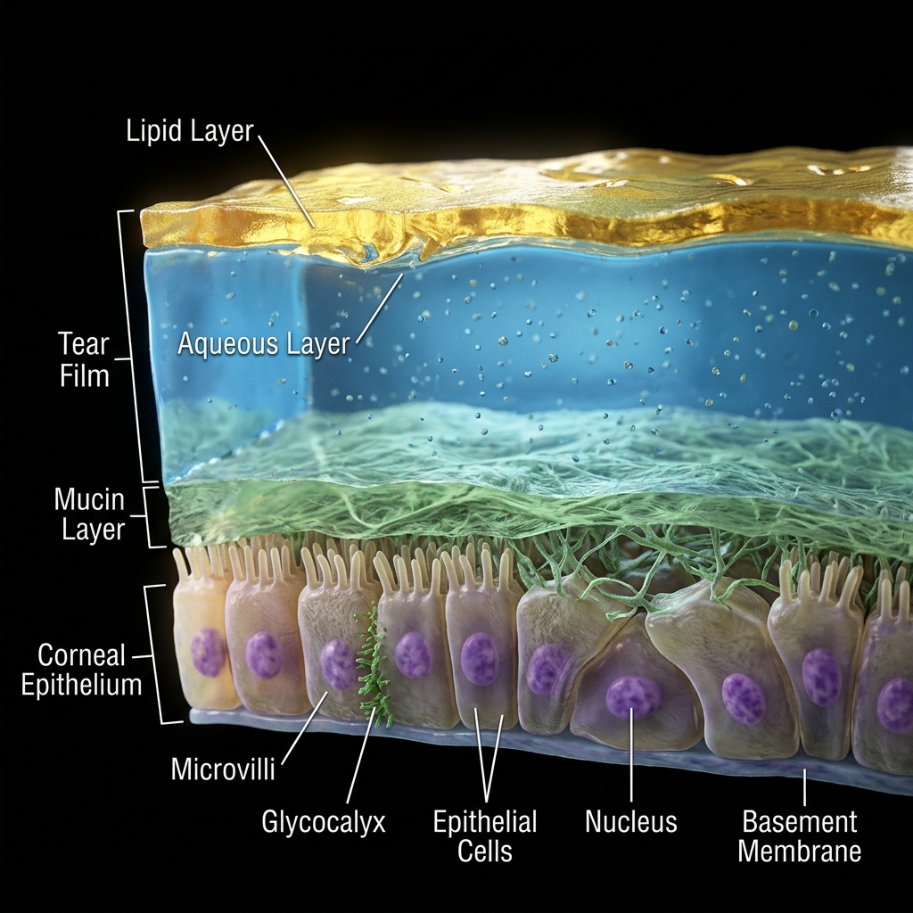
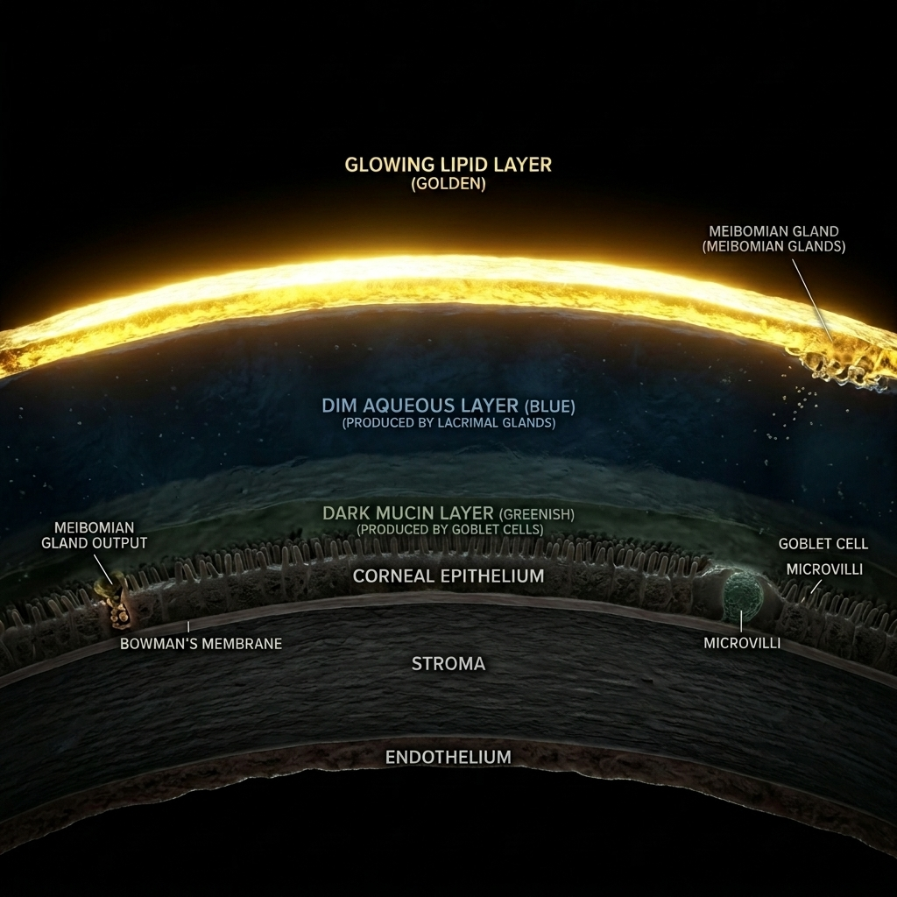
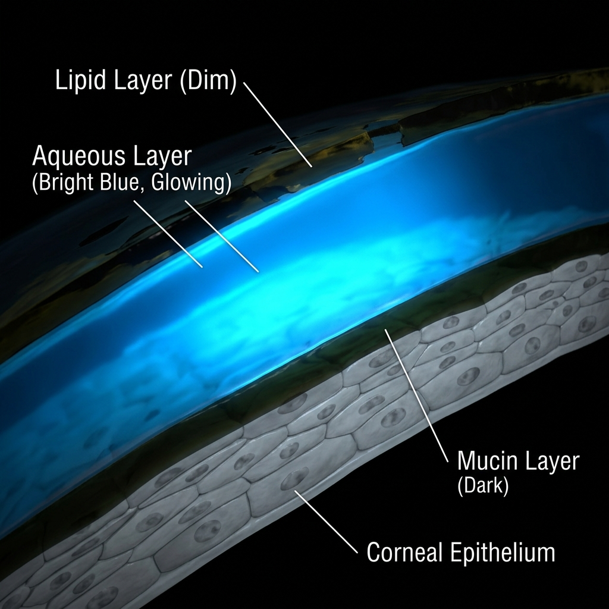
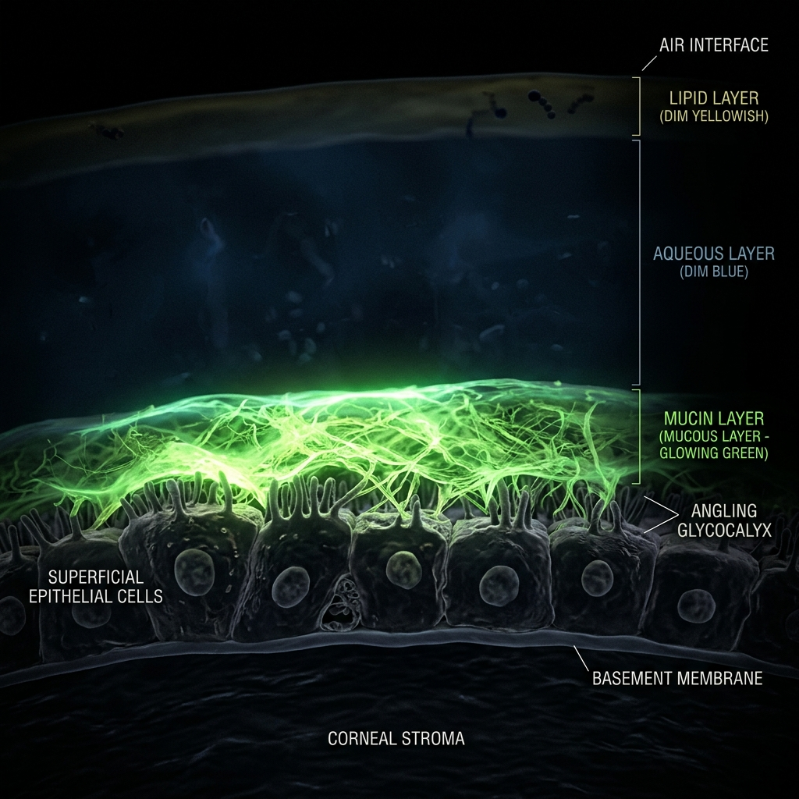

Advanced diagnostics. Proven treatments. Life-changing relief.
Dry eye can affect anyone, but the underlying causes often shift as we progress through different stages of life.
If you've tried countless over-the-counter drops with no lasting relief, it is not your fault. Standard eye drops are mostly water—they just evaporate right off your eye. A healthy tear film requires three distinct layers to work. If your lipid (oil) layer is deficient (MGD, 86% of cases), water cannot stay on your eye.
Produced by the Meibomian glands in your eyelids. This oily layer seals the tears and prevents them from evaporating too quickly.
Produced by the lacrimal glands. This watery layer makes up most of the tear, providing essential nutrients, oxygen, and washing away particles.
Produced by goblet cells on the eye's surface. This mucous layer acts like an adhesive, helping the watery layer stick evenly to the eye.




Cost: ~$360+/year (recurring)
Value: Long-term root cause resolution
Chronic dry eye is a complex, progressive disease that affects your daily work, sleep, and confidence. Recognizing these signs and symptoms is the first step toward clinical, root-cause relief.
A constant hot, irritated sensation. It makes screen-heavy workdays a struggle, causing severe digital eye strain, watering, and forced breaks.
The persistent feeling of sand trapped under your eyelids. It often makes waking up in the morning feel like your eyelids are scraping across dry sandpaper.
Excessive watering triggered by surface irritation. These reflex tears lack lubricating lipids and run off without providing true relief.
Vision that tires quickly when reading or staring at screens. It causes glare and halos around headlights, making night driving feel stressful and unsafe.
Bloodshot eyes and swollen lids caused by chronic friction on the eye surface, which often leaves patients feeling self-conscious in social settings.
A buildup of sticky mucus threads in the corners of your eyes, as your ocular system tries to compensate for the lack of healthy tears.
We use state-of-the-art technology to pinpoint the exact root cause of your dry eye, allowing us to customize a treatment plan specifically for you.
Assesses the lipid (oil) layer
Click to flipMeasures your lipid layer thickness with nanometer precision and captures your blink dynamics to identify if you are fully blinking.
Infrared gland imaging
Click to flipUtilizes advanced infrared imaging to visualize the Meibomian glands inside your eyelids, assessing them for structural health.
Measures tear stability
Click to flipUses specialized fluorescein dye to measure exactly how many seconds it takes for your tear film to break apart between blinks.
Measures tear volume
Click to flipA simple paper strip test placed gently on the lower eyelid to measure your baseline aqueous tear production over 5 minutes.
TearLab assessment
Click to flipMeasures the salt concentration of your tears. High osmolarity is a proven biomarker indicating dry eye disease.
InflammaDry point-of-care
Click to flipA rapid test detecting elevated levels of MMP-9, a key inflammatory biomarker that is elevated in patients with dry eye.
Most general eye clinics treat dry eye as a temporary inconvenience. We treat it as a chronic, multi-faceted disease requiring medical-grade diagnostics and customized treatments.
| Clinical Feature | Standard Eye Care | Marano Specialty Dry Eye Center |
|---|---|---|
| Diagnostic Approach | Basic eye chart exam & symptom checklist | ✓ LipiView® Interferometry & TearLab® Osmolarity |
| Root Cause Analysis | Symptom-based guesswork | ✓ Infrared Meibography (visualizing gland structure) |
| Treatment Diversity | Generic OTC drops & warm compresses | ✓ Tailored multi-layered drop therapies & office procedures |
| In-Office Procedures | Unavailable / not offered | ✓ LipiFlow® Thermal Pulsation & Punctal Plugs |
| Insurance & Prescription Support | Standard Rx submission only | ✓ Dedicated prior-authorization team for brand drugs |
We provide a comprehensive spectrum of treatments targeting the specific root causes of your dry eye, utilizing the latest in pharmaceuticals and in-office procedures.
Your immune system can mistakenly attack your own tear glands, causing inflammation that halts tear production. Restasis contains cyclosporine, which calms this specific immune response—like telling overactive immune cells to stand down—so your glands can produce tears naturally again.
Dry eye inflammation starts when certain immune cells (T-cells) stick to the surface of your eye. Xiidra works by blocking the molecular "handshake" (LFA-1/ICAM-1 interaction) that lets these cells latch on, reducing inflammation directly at the source.
Tyrvaya® is a preservative-free nasal spray that activates a natural nerve pathway connecting your nose to your tear glands. By stimulating the trigeminal nerve, it signals your body to produce all three layers of your natural tear film—allowing you to generate your own real tears.
Tryptyr is a unique eye drop that targets the TRPM8 cold-sensing receptors on the surface of your eye. By triggering these receptors with a mild cooling sensation, it signals the lacrimal gland to produce reflex tears and encourages natural blinking, providing refreshing moisture.
Miebo is a unique, water-free eye drop that directly targets tear evaporation. It spreads quickly across the eye's surface to form a protective shield that mimics the natural lipid layer, preventing your natural tears from evaporating and providing lasting relief.
Similar to Restasis but utilizing a breakthrough delivery technology called NCELL™ nanomicelles. These microscopic carriers help the medication penetrate deeper into your eye tissue, delivering a stronger dose of immune-calming cyclosporine exactly where it's needed most.
Your tears naturally drain away through tiny openings called puncta in your eyelid corners. Punctal plugs are microscopic biocompatible devices (smaller than a grain of rice) that gently block these drain holes. By slowing tear drainage, your own natural tears and artificial tears stay on your eyes longer—like putting a stopper in a bathtub to keep the water in.
LipiFlow is a 12-minute in-office treatment that applies precisely controlled heat to the inside of your eyelids while simultaneously applying gentle pulsating pressure to the outside. This combination melts and expresses blocked oils from your Meibomian glands—like unclogging tiny oil ducts—restoring the protective lipid layer of your tears.
NearTear uses tiny electrical impulses delivered inside your nose to activate the same natural nerve pathways that trigger tear production. Think of it as gently "turning up the volume" on your body's own tear-making system. The treatment stimulates both the aqueous (watery) and lipid (oily) components of your tears.
Don't just take our word for it. Hear from Marano Eye Care patients who have found lasting relief.
While dry eye is often a chronic condition, it is highly manageable. With the right diagnostic approach and a tailored treatment plan, we can significantly reduce your symptoms, prevent further damage to the ocular surface, and restore your quality of life.
This varies by patient and treatment. Some procedures like LipiFlow or punctal plugs can provide relief within a few weeks. Prescription drops like Restasis or Xiidra may take 2 to 12 weeks of consistent use to achieve their full anti-inflammatory effect.
Many diagnostic tests and prescription medications (like Restasis or Xiidra) are covered by standard health or vision insurance, though co-pays vary. Some advanced in-office procedures like LipiFlow are typically considered out-of-pocket expenses. Our team will verify your benefits and explain all costs prior to treatment.
Resolving chronic dry eye doesn't have to be complicated. We've structured a clear, seamless path to restoring your comfort.
We use non-invasive LipiView® interferometry and TearLab® osmolarity testing to map your tear chemistry and image your actual oil glands. No pain, no guesswork.
Our board-certified cornea specialists design a target-specific regimen combining FDA-cleared in-office thermal pulsation (LipiFlow®) and advanced prescription drops.
By treating the root cause (MGD/inflammation), we reactivate your own natural tear film, allowing you to live, work, and drive without constant burning.
Board-Certified Ophthalmologist & Medical Director
Dr. Matthew Marano is a leading board-certified ophthalmologist specializing in advanced dry eye care and corneal diseases. Over the past three decades, he has helped thousands of patients in Northern New Jersey restore their visual comfort through pioneering, target-specific dry eye diagnostics and state-of-the-art therapies. He is dedicated to offering personalized care that treats the root biological causes of dry eye rather than just masking symptoms.
Don't let dry eye dictate your life. Schedule your comprehensive dry eye evaluation at Marano Eye Care today.
Thank you. Your self-assessment and request have been safely routed to our team. We will call you shortly to confirm your scheduled diagnostic evaluation.